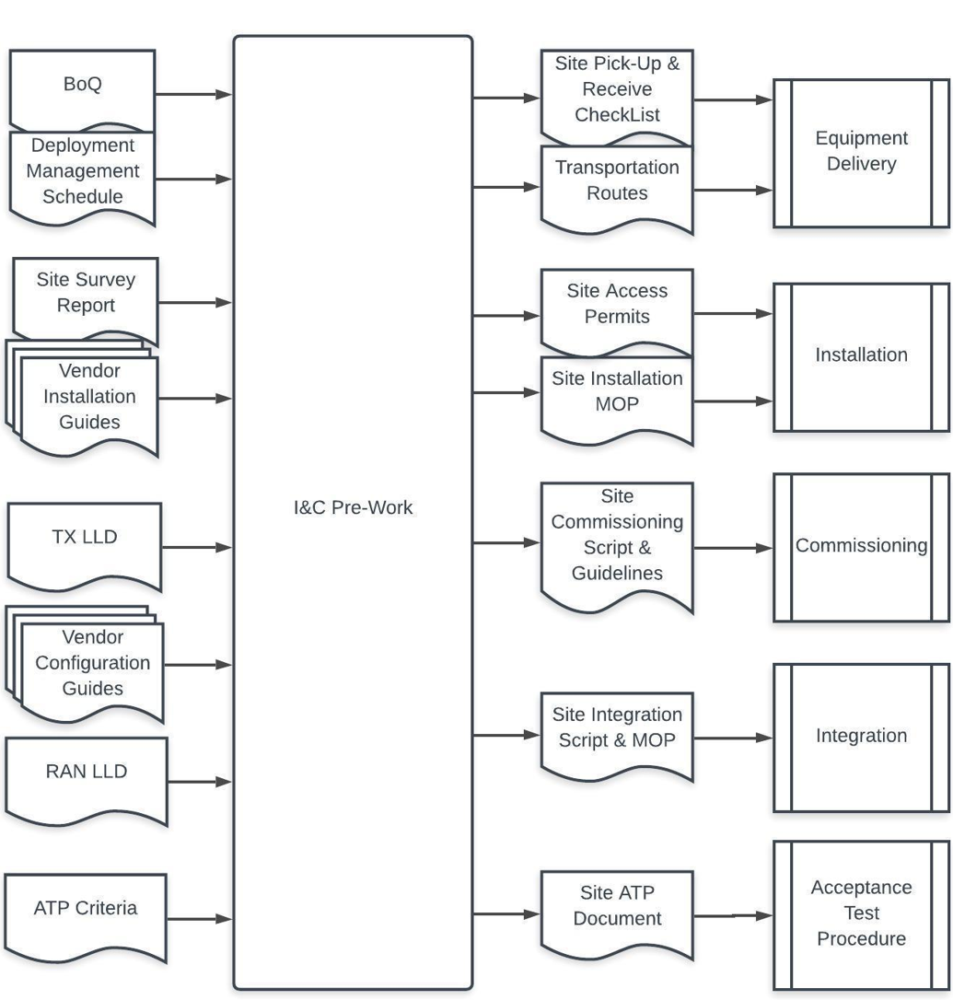

1 Introduction
The Installation & Commissioning (I&C) module provides the NaaS operator background information and recommendations to develop their own I&C strategy including the selection, training and support of field technicians that perform activities on site.
Installation and Commissioning module also provides guidelines for the NaaS operator to prepare their own I&C tasks, create their own Installation Methods of Procedure (MOPs), develop their own how-to Commissioning Guides, elaborate Step by Step Integration Methods of Procedure and define their own Installation Acceptance Criteria and Test Procedures.
The Module consists of three sections:
The Process Described in this Module was developed following a Low-Tech Model, which can be defined as the I&C Strategy for the Organizational Structure, Procedures and Tasks designed to support and facilitate the Field staff jobs in the NaaS rural operator scenario, which may be technicians with lack of technical knowledge or skills that will work in hard conditions.
1.1 Module Objectives
This module will guide NaaS Operators to plan their strategies and process for the different installation scenarios, improving speed and quality of the implementation following the First time Right approach, fundamental for NaaS implementation in rural scenarios. The Module focuses on the following objectives:
1.2 Module Framework
NaaS Runbooks Framework shown in Figure 1 displays the Runbook modules and their relationship to the Installation & Commissioning (I&C) Module.
The Strategic Plan & Scope and High-Level Network Architecture modules provide the business and technical context for the NaaS Operator and directly impact on many aspects of the Deployment Stream.
The Installation & Commissioning Module is included within the Deployment Stream. It takes inputs from the RAN & Transmission LLD and the output generated serves as the required input for Operations & Maintenance module.

Figure 1. Network Deployment and Management Framework.
Figure 2 presents the I&C process view where the Inputs and Tasks are exhibited.
Figure 2. Installation & Commissioning Process view.
2 Installation & Commissioning Process Overview
This section presents a high-level overview of the main tasks, inputs, pre-requisites, and requirements for the whole Installation & Commissioning Process. The process includes I&C Task preparation (Pre-work), Equipment Delivery, Installation, Commissioning, Integration, Acceptance Tests and Close-Out Package.
2.1 Installation & Commissioning Pre-Work
I&C Pre-Work is the preparation process that comes before hands-on work. It involves a series of tasks required to facilitate field works, decreasing the probability of issues and ensuring the first time right approach and optimizing the whole process. Some of these tasks are obtaining the access permits, identifying the site representatives, points of contact (PoC) and preparing transportation routes to the site as well adapt previously developed MOPs, Checklists, Scripts and ATPs streamlining the process that must be customized for each site.
The Pre-Work process is illustrated in Figure 3. Where left blocks represent the inputs from TX LLD, RAN LLD and other sources; on the right, the I&C pre-work procedure which has as an outcome the customized MOPs, Checklist, Guidelines and Pre-Requirements for each process, that are listed in the right.

Figure 3. Installation & Commissioning Functional view
Pre-Work tasks will be deeply described in section 5.2.1 that includes step-by-step Guidelines and recommendations for the NaaS Operator to prepare their own I&C tasks.
2.2 Equipment Delivery
In the NaaS operator scenario, the Equipment Delivery from the local warehouse to the site is especially difficult due to different reasons, such as the sites are far from warehouse distribution centers or cities, or the roads may be in bad condition making equipment delivery an expensive and arduous task. Thus, transportation of the Network Equipment, Ancillaries and Tools optimally must be done in one shipment.
Equipment Delivery starts in the local Warehouse, where the Network Equipment and Ancillaries is collected by the Field Personnel that will perform the installation. NaaS Operators can choose to hire shipment services; this decision may depend on many factors such as route challenges, tight schedules or budget assigned to this task.
The Local Warehouse personnel must be prepared with the pre-defined kits for each site (for more detail, please see section 4.4) properly documented in the Pick-Up Checklist that includes information about who will pick up the equipment.
Section 5.2.1.3 contains useful considerations to optimize the transportation process of the network equipment, tools, and ancillaries from the local warehouse to the site. It also includes instructions to elaborate a Pick-Up Checklist Template used as the pre-requirement to pick-up Network Equipment, Tools and Ancillaries from Local Warehouse and Receiving it in the Site, providing a Generic Pick-Up and Reception Checklist Templates to be adapted by NaaS Operators procedures.
2.3 Installation
Installation takes place when all Field Personnel are properly equipped with Safety Gear and Tools on Site and this has been validated by the Field Supervisor, ensuring that personnel will be safe.
Figure 4 shows a Base Station common scenario which uses Microwave as the Backhaul Technology and the Network equipment is installed within a shelter at the base of a tower. RAN equipment antennas and radio units are mounted for this case at the top of the tower.

Figure 4 Common Scenario of a Base Station
2.3.1 Backhaul Equipment Installation
The installation of Backhaul equipment will depend on NaaS operators Tx Design. NaaS Operators Network may include different technical solutions in their network as detailed in the subsections below.
2.3.1.1 Microwave Backhaul
For microwave, there are two mounting solutions Split Mount and Full Outdoor:

Figure 5 Microwave Installation Scenarios
2.3.1.2 Satellite Backhaul
Satellite backhaul solution consists of a Very Small Aperture Terminal (VSAT) with a remote router or VSAT modem, connected to a small (1.2m to 3.8m diameter typically) dish through a coaxial cable. The VSAT modem is connected through an Ethernet interface to the Base Station.
Figure 6 Satellite Backhaul Solution
2.3.1.3 Fiber Backhaul
In the case of Fiber backhaul, a site router or switch must be installed and a last-mile fiber from the site to the transport providers network must be deployed (For more detail, please see Fiber Construction Module). The NaaS Operator must request the transport providers (FiberCo) connectivity services, ensuring transport availability by the time the site is integrated. Transport service shall be tested and reported to ensure the performance and availability of the transport link. This procedure is critical and should be performed before the RAN equipment installation process begins.
Figure 7 Fiber Last Mile Construction
2.3.2 RAN Equipment Installation
For RAN equipment, installation scenarios will depend on selected vendors, site type (Macro or Small Cells), Indoor or Outdoor Installation. Tasks include the installation and cabling of the Baseband Unit, Radio Units and Antennas. Figure 8 shows the most common scenario in rural deployments: The baseband, rectifiers, and batteries are installed within IP55 outdoor cabinets at the base of a tower or a monopole, antennas, and radios at the top of it. Optic fibers are connected between baseband and radios going down along the tower secured with fiber clips in the tower body. In a similar way, power cables go down from radios to power equipment; antennas and radios are interconnected using RF cables.

Figure 8 RAN Equipment installed in a monopole
This configuration may vary depending on the scenario that should be properly documented in the previously defined Method of Procedure of each site (as described in section 5.2.3), which the field supervisor must follow, ensuring installation methods are in line with the NaaS Operator predefined procedures. Installation concludes when all site elements in the Receive checklist are in place and verified by the Field Supervisor.
Section 4.2.5 will guide the NaaS Operator on how to create their own Installation Methods of Procedure for RAN, Transmission and Power Equipment for the Low-Tech NaaS Operators Field Crew. Generic Installation Method of Procedure Templates are provided to be adapted by the NaaS Operator with the NaaS Administrative, Security and Standard Procedures and in accordance with vendor equipment or installation scenario.
2.4 Commissioning & Integration
Commissioning tasks involve turning up the Transmission and RAN equipment, configuring it, debugging, and validating end to end service works properly. The transport configurations include configuring the required connections to reach a working IP network; RAN configurations include the connections to the Core network elements to which the site is related, such as the O&M System, MME, S-GW, and Neighbor eNodeBs.
The Commissioning Script is prepared commonly by Integration Engineer and shared previously in the Pre-work phase with the Field Supervisor. The Commissioning Script is a file that is loaded to the transport equipment and includes preconfigured routes to reach the Core from the RAN site.
When the transport is successfully configured the RAN Base Station is also commissioned, this process is performed in order to configure the Base Station without the need to configure it manually and optimize the overall procedure.
Under ideal conditions, the Field Supervisor should receive constant support from the Integration team that monitors if the site can be reached from the Core side, both teams work together if troubleshooting is required. Once the site is reached from the O&M system, the Integration Tasks may start.
During the Integration phase, the Integration team ensures that the site is fully operational and ready for commercial use as part of the NaaS Operator Network. In the Integration phase, NaaS Operator Integration Team loads RAN LLD parametrization, configures Base Station Alarms and Visibility of the site in the O&M System. Additionally, in collaboration with Field Supervisor perform troubleshooting to clear any external and configuration alarms.
The Procedure is deeply analyzed in Section 5.2.4 including 2 different Process Diagram.
In the NaaS Operator Scenario, the Core Network composed by MME, S-GW, IMS may belong to a Mobile Network Operator (MNO). If this is the case, the NaaS Operator Integration team should coordinate previously with the MNO team to configure the interconnections between the Core Network Elements and Base Station.
Once Base Station is configured and integrated, the next step is to validate the connections between network elements, network synchronization and inspection of Base Station performance data in the network management system. Inter-working of network elements, as well as the functionality of alarms and recovery systems on a network level are tested.
Section 5.2.4 contains considerations to the NaaS Operator to develop their own how-to Commissioning Guidelines for the Low-Tech NaaS Operators Field Personnel, providing generic Commissioning & Integrations Guideline Template to be customized by NaaS Operators depending on vendor equipment including an evaluation of tools and pre-requirements of the Activities. The
2.5 Acceptance Test Procedure
Acceptance Test Procedure (ATP) is a critical process before bringing the Site into commercial service. It is a multi-step process that involves validating the installation quality of hardware and testing the end to end service with field tests. It ultimately verifies the site performance in the field as a customer would experience it.
The Acceptance Test Procedure follows the previously defined criteria established in the ATP document, customized for each specific site validating each of the site elements:
The ATP includes a photo report that proves Installation has followed NaaS operator Methods of Procedure and Quality standards.
Acceptance Test Report is a critical document to transfer the site responsibility to the Operations Team. Naas Operators can use the Acceptance Test Report for other reasons such as a trigger for invoicing and payment to vendors and 3rd party services managed by Supply Chain Management.
For more information, please see Section 4.2.6, which contains considerations for the NaaS Operator to define their own Installation Acceptance Criteria of the Base station, Power and Antennas to develop a Step-by-Step Acceptance test procedure for the Low-Tech Field Personnel. It includes Guidelines for the NaaS Operator to define their operability and service tests to be included in the Acceptance Test Procedure, providing a generic Acceptance Test Procedure Template to be Customized by NaaS Operators depending on their Acceptance Criteria.
2.6 Close-Out Package
The Close-out package consists of collection, organization, review and delivery of all the relevant information generated before and during I&C (e.g. Site Acquisition, Construction, Installation and Commissioning and acceptance test reports). As a best practice, it is important to define the responsible party for elaborating each document through the deployment phases. Once each responsible parties have it ready, they upload it in a site tracking tool or document repository such as Dropbox or Google Drive, organizing the documentation on a site basis. This activity will prove that vendors and service providers followed all the contract agreements, and their objectives have been met. The Close Out Package facilitates the future operation and maintenance tasks.
Section 4.2.7 provides a generic Close-Out Package Checklist to be Customized by NaaS Operators depending on their generated documentation within the I&C process. Additionally, Section 4.2.7 evaluates Documentation Management platforms to be considered within NaaS Operator Tools.
3 Installation & Commissioning Strategy
In RAN sites located in rural scenarios, the Installation & Commissioning process plays a critical role in achieving a successful and affordable Roll-Out Project. NaaS organizations must tailor their process to their scenario and develop a strategy to overcome the challenges in rural deployments which has its own characteristics where access to sites is generally difficult (sites far from warehouse distribution centers, cities or even paved roads). Therefore, Installation & Commissioning (I&C) must be conducted with a goal to do it the first-time-right, avoiding complimentary site visits, which may result in delays and cost overruns. The following subsections analyze the different strategies that NaaS operators may follow to fulfill the required tasks.
3.1 Insource vs Vendor Outsource
The NaaS Operator can choose to have its own collaborators responsible for carrying out I&C tasks (in-sourcing) or contract a third-party company to carry out (out-sourcing). In-sourcing implies that NaaS Operators have the required job profiles within their organization or that they can hire additional workforce. On the other hand, choosing to out-source I&C activities require an extra investment. Therefore, sourcing selection implies a tradeoff between spending financial resources on a third party, building an internal team with the resources that NaaS Operators already have or hiring additional collaborators.
3.1.1 Insourcing Scheme
In case of the insourcing having an internal employee will allow NaaS Operators to customize the process if its required since insourcing staff will respond to changes more quickly than if they are under outsourcing scheme. Additionally, after the I&C process, the NaaS employees can move to other tasks such as Network Maintenance where they will need less management and likely have fewer mistakes than an employee under an outsourcing scheme that feels no loyalty to the NaaS Operators business.
Please note that in case of insourcing the cost of required tools, vehicles and Personal Protective Equipment is absorbed by NaaS Organization, it is a best practice plan to take care of these tools to be used in forthcoming phases.
3.1.2 Outsourcing Vendor Scheme
In the case of Outsourcing the most common option is to hire professional services from vendors or consultants for the I&C tasks. Vendors organize their own team, including Implementation Managers, Project Managers, Specialized Integration Engineers for RAN, Core, among others. The offered services will vary depending on the agreement and very likely will increase the cost but will facilitate the whole deployment.
If NaaS Operators choose to Out-Source personnel, payroll, additional benefits and social security taxes will depend on outside contractors responsibility. Depending on the agreement, additional costs such as Tools, Vehicles and Personal Protective Equipment can be included in the contractors agreements.
Additionally, Out-Sourcing contractors provide a great deal of flexibility to the NaaS organization and their service can be used at the convenience of the NaaS Operator. This is especially helpful in situations where the implementation is altered in some way. If, for example, the roll-out is halted in a region due to any reason that doesnt depend on NaaS Operators plans, therefore, when using the services of outside contractors, there is no need to stop the work and maintain idle resources.
Below is a list of considerations for NaaS Operators Responsibilities under the out-sourcing scheme.
Overseeing the progress of the key I&C tasks will help to keep a record of the planned schedule for each site when milestones are completed. Reports from contractors may be used as the trigger for a milestone completion. Reviewing the reports of all activities will improve quality by locating works that need improvement or reworks if necessary, until the required task meets the expected outcome.
3.1.3 I&C Roles
For the following Roles, NaaS Operators must evaluate if can be covered by insource employees or require to outsource the required tasks.
Field Supervisor
A Field Supervisor allows flexibility to oversee the installation, and they can oversee the installation process in more than one site if there are tight schedules. In addition, they might manage multiple install crews if it is required. Following Tasks are considered within Field Supervisor Scope:
Due to the requirements of this role, is recommended to insource the required resource whenever is possible, since the required experience will be useful in forthcoming phases up to the maintenance of the network.
Installation Technicians
A team of Installation Technicians may perform the Installation and cabling of Network Equipment and depending on the established scope they might perform the commissioning process.
If network expansion is not planned soon and NaaS Operators have Field supervisors within their organization is recommended to outsource the Installation Technicians if it is possible.
Integration Engineer
Integration Engineer is a specialized role that requires deep technical knowledge of the Network Equipment and Technology, NaaS Operator may consider obtaining an Integration Consultant Services to perform Following Tasks:
Due to the characteristics of the tasks that integration engineers perform which most of them are performed just during the deployment, NaaS Operators may consider outsourcing the integration engineer role.
3.2 The Low Tech Model
Another option is to develop a strategy that reflects NaaS own conditions. The strategy strongly depends on adequately choosing personnel who know the deployment area, are able to work in challenging field conditions, even if they dont have full technical knowledge to perform more complex I&C tasks. Under these conditions, the Runbook introduces the Low-Tech Model as an approach for NaaS Operators to adapt their organization, processes, and tasks to achieve the First-time right aim with Low-Tech personnel.
The Low-Tech Model is a strategy for the NaaS Operator to obtain Field Technicians resources locally for Installation & Commissioning Tasks ensuring there is enough support from all other stakeholders through all phases of the process, facilitating their tasks in the difficult environment of rural areas to ensure the quality of site works and achieve the targets on time.
The Low-Tech Model considers four key Stakeholders: The Deployment Manager, the Integration Engineer, Field Technician and the Warehouse Manager. They can perform certain actions in addition to their current scope that will support Field Technician at the different stages of Installation & Commissioning.
The Deployment Manager
Integration Engineer
Field Supervisor
Deployment Team
Figure 9 shows a visual representation of the Low-Tech Model:
Figure 9 The Low-Tech Model
NaaS Operators must decide on one of the presented approaches to be tailored for their organization. The Table 1is an analysis of Advantages and Disadvantages of the Low-Tech Model
|
Advantages |
Disadvantages |
|
Lower Cost of Operation (Cost savings is expected to be critical in rural deployments) |
Training may be required. |
|
Increase Overall Control of the Deployment. |
Additional Tasks are added to other team members. |
|
No need of 3rd party vendors in their operation |
Found Experienced resources locally may be challenging. |
|
NaaS Operators will learn to deploy an installation rollout useful for future expansions. |
The deployment may be slower due to the learning of the employees. |
Table 1 Advantages and Disadvantages of the Low-Tech Model
3.3 Technician Training
As part of the Low-Tech Model and with compliance with local authorities, NaaS operators should consider a training program for field technicians and supervisors to ensure they have the knowledge to safely work with power equipment and work on towers at height. Additionally, it is recommended to perform training on how to properly install and commission sites as this will result in better deployment quality, speed, and efficiency.
NaaS Operator can develop a Training with the following considerations:
Specific features of the Training Plan may include:
If the Low-Tech Field technician gets proper training and there is support for the technician in the field, the cost-benefit relations in the short and long term will be higher, (e.g.) the NaaS operator will be able to deploy sites faster and these same resources could be used in the future for maintenance task.
3.4 Kitting Process
Kitting is a material management strategy used to create pre-packaged and pre-labeled components, increasing efficiency, and reducing time-consuming organization of Equipment Delivery. Kits simplify Supply Chain by taking several Network Equipment and Ancillaries and combining them into one kit that are always used together, depending on Installation scenarios.
NaaS Operator can use these steps to implement a kitting program that eliminates SKUs and streamlines in the supply chain:
Table 2 shows an example of Kitting for a site in Outdoor Location, Satellite Backhaul and 2 sectors is in below:
|
Rural Site : RUR2020 |
||||
|
#Kit |
Kit Description |
Components |
Quantities |
Code |
|
Kit 1 |
.- Outdoor Grid Power |
Power Distributor X |
1 |
SKUSR |
|
Rectifier Vendor X |
2 |
SKU1KMFBR |
||
|
Battery Cabinet Vendor X |
1 |
SKUSCV1 |
||
|
Breakers Vendor X |
10 |
SKUBRK01 |
||
|
Battery Vendor X |
8 |
SKUBTRY01 |
||
|
Kit2 |
.-SAT Backhaul |
Vsat-DISH |
1 |
SDKUVSDSH |
|
Vsat Modem Vendor 2 |
1 |
SKUMV2 |
||
|
Coaxial Cable 30 mts. |
1 |
SKURRUV2 |
||
|
Ethernet Cable |
1 |
SKUDRANT |
||
|
Connectors |
2 |
SKUSFP |
||
|
Mounting Ancillaries |
1 |
SKUFIBR |
||
|
Kit3 |
.-Outdoor Baseband x2 Sector 2x2MIMO |
Radio unit Vendor 2 |
2 |
SKURRUV2 |
|
Directional Antenna Vendor 5 |
2 |
SKUDRANT |
||
|
MM SFPs Vendor 2 |
4 |
SKUSFP |
||
|
MM Fibers Vendor 2 |
2 |
SKUFIBR |
||
|
Baseband Unit Vendor 2 |
1 |
SKUBBU |
||
|
Cabinet for NW Equipment |
1 |
SKUCAB |
||
Table 2 Sample of Kitting Process
4 Process Definition
Processes provide a way to communicate and apply consistent standards and practices within the NaaS Operations. The procedure will define the activities to be done, who performs them, what is the purpose, how it is performed and then who is responsible for the procedure. Once worked through, it provides an efficient way of performing the task in a consistent way, reducing greatly reworks since employees know exactly what, when and how to perform their tasks.
This section shows a generic process that NaaS operators may use as a reference to define their own process that better suits their organization. It also includes guidelines that will help NaaS operators to develop their own administrative and security processes. Additionally, it contains instructions to create their own I&C instrumentation such as Checklist, Methods of Procedure and Guidelines Templates.
4.1 Administrative & Security Process Definition
In Greenfield scenarios, the site is acquired before the installation by the NaaS Operator; thus, the responsibility of taking care of the security, safety, and legal procedures belongs to the NaaS Operator. The NaaS Operator must assign a Site Owner as responsible for the security of the site and predefine their administrative and security procedures for site visits on a Site Access Procedure. In case of existing sites where a space for installation is leased, such as MNO Towers or Private Building, site owners must inform about their Access Request requirements to the NaaS Operator who must consider those requirements as part of their own procedures.
This section evaluates Site Access Procedures, including safety and legal requirements. NaaS operators may consider these procedures as pre-requirements to work on their site facilities, avoiding Security issues, ensuring the safety of Field Workers and avoiding legal penalties.
4.1.1 Safety Procedures definition
Prior to allowing anyone to work on a Site, a relevant risk assessment and a Safe Work Procedure (SWP) must be developed and provided to the Site Owner.
Safety Procedures are detailed documents to cover the implementation of safe systems of work. As such, they constitute a mandatory element in attaining the required safety standards given either by industrial standards or by law. NaaS Operator should be informed of local regulations and ensure that all workers in the field follow the Safety Procedures.
Below there is a set of considerations for NaaS Operator in order to develop their own Safe Work Procedure.
Please note that the above considerations are just an example for the NaaS Operator Safety Procedures, please review the requirements detailed in Local regulations.
The Deployment Manager or the Field Supervisor will ensure that the safety procedures are kept up to date and under constant review in the light of feedback from operational experience and from safety audit reports. Changes will be initiated where existing safety procedures are found to be inadequate or in need of improvement. As a best practice, NaaS Operators may include a list and key actions for their field workers to perform the Safe Work Procedures in their Methods of Procedures for installation tasks, register that they comply with a checklist or a signed format and add it to each site close-out package.
4.1.2 Security Procedures Definition
NaaS Operator and site owners may use a Security control with an Access Procedure, which consists of controlling visitors to the site. Visitors must obtain written authorization from the Site Owner before entering into the Site. This should be submitted to the Site Owner with the Access Request Form. Field workers must carry relevant records of their competency and a copy of the Safe Work Procedures on each visit to the Site.
Field Technicians that are accessing a Site for any reason may perform potentially hazardous tasks or have the potential to interrupt a Service of another company; the Site Owner must need to know what activities are being undertaken on the Site. The more information that visitors can provide, the better. As a Best Practice, Access to Sites can only be given for the permitted use described in an approved Access Request Form. Any additional work or variations to the initial proposal must be submitted to the Site Owner or Infrastructure Owner for further approval. An Access Request Form Template is provided so that NaaS Operators adapt it to their own security standards.
4.1.3 Security Requirements
NaaS Operator may consider adding working periods in their Access Request Form, this is made to avoid working overlap during that period. This will avoid unauthorized visitors and enhance the control of any Security Issue. Over-estimations of access times may be refused, especially where such access inconveniences other Service users. Under-estimations of access times must also be avoided, as under-estimations also often lead to Service interruptions due to work running overtime.
Additionally, to control the access to the NaaS Operator Network during Commissioning and Integration process all stakeholders must previously request access to the network to the Network Operation Center (NOC) with their users ID to perform the network configurations, as was mentioned previously In the NaaS Operator Scenario, the Core Network may belong to a Mobile Network Operator (MNO). If this is the case, the NaaS Operator Integration team and MNO personnel schedule the integration of the RAN site to the MNO Core Network. This is commonly performed by MNO staff.
4.2 Process Guidelines and Instrumentation
The following sections provide guidelines for the NaaS Operator to prepare for the I&C tasks, creating their own I&C Methods of Procedure, Define the Acceptance Test criteria and properly manage all the generated documentation with the most appropriate tools and methods.
4.1.1 Pre-Work Guidelines
Before Installation Procedures, a set of tasks must be prepared to enable seamless work, avoiding delays and rework which result in cost overruns. The scope of the Pre-work task is to ensure to have all requirements (e.g. BoQs, Site Survey Reports, TX LLD, RAN LLD, Vendor Installation & Configuration Guides) to prepare the following tasks:
In this way, all requirements will be ready before Field Technicians arrive at the remote sites. A Best Practice is to identify the points of contact (PoC) for each requirement; they will upload their respective documents to cloud platforms such as Google Drive, DropBox, or SharePoint. In this way, the information can be easily referenced.
In addition, the NaaS Operator must identify the points of contact (PoC) or site owners for each site to coordinate access and activities. All these pre-requirements may be used as a go-no go enabler to start with the equipment transportation tasks.
This module provides a Pre-work Checklist Template to ensure all inputs and prerequisites are complete before hands-on in field works.
4.1.1.1 Access Permits
Access Permits are required regardless if the Site is owned by the NaaS Operator or the site is leased to MNOs tower or a private building. The site owner must be properly identified for each site to perform the Site Access Procedures. A best practice is performing the procedure several days in advance,(Quantity of days will depend on each Site owner) this must be done for each work visit in every site.
The Deployment Manager may carry out this activity, sending the Access Request Form to the Site Owner previously identified filled with the required information of all Field Technicians and ensure that they are properly identified as part of NaaS Operator Workers. NaaS Operator may use the Access Request Form Template for this purpose.
4.1.1.2 Equipment Pick-Up Checklist
After NaaS Operator has defined the kitting process, Warehouse Manager, Deployment Manager and Field Technician must be aware of each equipment that will be installed following the RAN LLD BoQ detailed in a Pick Up Checklist which should be prepared for each site detailing clearly:
The checklist must be shared and signed by all stakeholders. As a best practice, it must be included in the close-out package as proof that the equipment left the warehouse. NaaS Operator may use the Equipment Pick-Up Checklist template for this purpose.
4.1.1.3 Routes Planning
Depending on Deployment Plan the Equipment Delivery may include more than one site to visit for multiple reasons (e.g. optimize the use of the NaaS Operators vehicles, saving time and cutting expenses). Improving the planning process to reduce the number of trucks, miles and drivers can increase the efficiency of the business.
Below there is a set of considerations to optimize route in a rural scenario:
A good practice is to develop a spreadsheet with the Site Address, which can be imported to a planning route tool. There are several free online tools that can help to plot a route for the drivers, the most popular service is probably Google Maps - its free and easy to use. Users may use the import feature to trace a route to the destination site and check which sites are close to the Route.
Please see: https://www.google.com/earth/outreach/learn/visualize-your-data-on-a-custom-map that will guide NaaS Operators to plan the equipment delivery routes to sites in the mentioned tools.
4.1.1.4 Installation MOP Generation
After Naas Operator has created their own Methods of Procedure, they should be adapted to each site that will be installed, reflecting the specific Site Information, Power Equipment, Transmission technology and RAN Scenario to be installed in the site.
This is an essential part of the Low-Tech Model, addressing Field Technicians with the specific task to perform avoiding possible mistakes, achieving more successful ATPs.
4.1.1.5 Commissioning Script Generation
Before the Installation Task may commence, the TX LLD must reflect the IP of the Network Interfaces of each Network Element, including the IP link between the Base Station and O&M System.
Integration Engineer needs this information in order to generate the Commissioning script to be loaded locally into the Base Station.
4.1.2 Equipment Delivery Guidelines
Equipment Delivery is a process that involves Warehouse Personnel, Field Technician and Deployment Manager.
4.1.2.1 Preparation
Field Personnel must be prepared with their batch or personal identification, double-checking to bring all their required tools and safety gear and they are in optimal conditions, as well as verify vehicle condition and documentation. Additionally, gather Transportation Routes, Site Permits, keys or codes and a copy of the Equipment Pick-Up Checklist template provided by the Deployment Manager.
The Warehouse personnel must be aware of who will pick up the equipment; this information must be shared previously by the Deployment Manager.
4.1.2.2 Equipment Pick-Up
A best practice is that both Local Warehouse and Field Personnel double-check the Network Equipment and Ancillaries. After the Validation Field technician and Warehouse Personnel must sign the Equipment Pickup checklist and a format of guide of Materials that will be used as an outgoing warehouse equipment proof to be added in the Close-Out Package. Field Personnel must follow the transportation routes and report to the deployment Manager when they arrive at each site involved in the route.
4.1.2.3 Receiving the Equipment
Once the Field Personnel and Equipment arrives at the site location and Administrative & Security procedures were performed as defined in section 4.1 the Receiving task is carried out unpacking previously assembled kits, filling the Site Equipment Reception Checklist verifying that all equipment arrived in optimal conditions. This task must also be performed if a shipment company delivered the equipment. When the Receiving task is complete, and Field Personnel rested properly, the Installation task can be performed.
4.1.3 Installation Guidelines
This section guides NaaS Operator on how to create their own Installation Methods of Procedure for RAN, Transmission and Power Equipment for the Low-Tech NaaS Operators Field Crew.
In order that NaaS Operators can develop its own Installation Methods of Procedure, this section provides a set of considerations, analysis and useful examples used in actual Installation rollouts. As a Best Practice, NaaS Operators may consider organizing their Procedures in three main documents that will guide the Field Technicians tasks:
A Best Practice is to layout the Method of Procedures tasks in chronological order as it shows in the Example Below:
|
Power Equipment Installation Method of Procedure Contents: |
Backhaul Equipment Installation Method of Procedure Contents: |
RAN Equipment Installation Method of Procedure Contents: |
|
1. Access Request 2.Health & Safety Measures 3.Pre-Installation Procedures 4.Connection Diagram 5.Equipment Description 5.1 Power Equipment Installation 5.2 Cabling & Labeling |
1. Access Request 2.Health & Safety Measures 3.Pre-Installation Procedures 4.Connection Diagram 5.Equipment Description 5.1 Antenna Mounting (Microwave or VSat dish) 5.2 IDU or Modem Mounting 5.4 Cabling & Labeling |
1. Access Request 2.Health & Safety Measures 3.Pre-Installation Procedures 4.Connection Diagram 5.Equipment Description 5.1 Antenna Mounting 5.2 Radio Unit Mounting 5.3 Base Station Mounting 5.4 Cabling & Labeling |
Table 3 RAN Equipment Installation Section Arrange for a MOP
The table shows the content of the Power, Backhaul and RAN Equipment Installation Method of Procedure. Please note that Access Request and Health & Safety Measures are the same procedures for all documents, NaaS Operator may consider Splitting those sections into another document.
This Module provides generic Installation Method of Procedure Templates for Power, Backhaul and RAN in order to be adapted by NaaS Operators. The following section is an analysis of a generic Method of Procedure for RAN equipment with the structure previously mentioned in which a NaaS operator can include them in their Methods of Procedure.
4.1.3.1 Access Request
The Method of Procedure should include a section that indicates step by step the task that the Field Technician must perform to request access to the site, as previously defined by the NaaS Operator as described in section 4.1.3
4.1.3.2 Health & Safety Measures
The Installation Method of Procedure must contain a set of tasks to prevent injuries and detail the PPE that field technicians must wear before the Equipment Installation tasks. NaaS Operators must include and consider those tasks a prerequisite for the Equipment Installation procedures, as was defined previously by a NaaS operator. For more information, please see section 4.1.1.
4.1.3.3 Pre-Installation
Pre-Installation Tasks are a set of validations that Field Technicians must perform before the Equipment Installation. NaaS Operator can consider it as a prerequisite before the hands-on tasks for installation and add it to their Methods of procedure. Below there is a list of tasks that NaaS Operator can include in their Methods of Procedure
1. Site Material Received
Field Supervisor or technician must verify all equipment is delivered to the site according to the Receive Checklist and is in good condition. A best practice is to include a copy of a receive checklist in the MOP.
2. Details of tools and testers
Methods of Procedure may include a list of tools and testers at the beginning of the document; this will ensure the installation technicians have all the required tools before climbing a tower or entering a private site which saves time. Figure 10 shows common Tools used in RAN equipment installation

Figure 10. Common Tools used in RAN equipment installation
3. Verify Weather Conditions
The Field supervisor must verify weather conditions before work in heights; best practices should not allow work in heights with winds velocity beyond 30Km/h. Water snow or ice accumulated in the tower should be considered a stopper of installation tasks.
4. Winch Installation
Installing heavy components in heights will require a winch or a crane that uses iron cables; the winch must be fixed in a completely stable structure.
Figure 11 Commonly used winch for tower installation
When the winch is properly installed, the installation procedures can start.
4.1.3.4 Connection Diagram
In order to achieve a better understanding, a connection diagram for each installation scenario must be developed for RAN, Backhaul and Power Equipment, showing the interconnection between Network Elements.
Figure 12 shows samples of RAN connection diagrams. Depending on the complexity of the scenario the connection Diagram could cover all connections in a single diagram or could be split, for example, Power Connections in one diagram fibers and RF connections in another diagram:

Figure 12 Connection Diagrams used in Actual Methods of Procedure
The Methods of Procedure must clearly express the installation scenario. In the example figure, it considers the following: 3 Sector Scenario MIMO 2X2 with Fiber Backhaul and a Rectifier that takes power from the grid. The connection diagrams are intended to represent a birds eye of the whole installation and dont require the use of actual images of the equipment. Additional details for connections procedures could be detailed in Equipment Installation sections.
4.1.3.5 Equipment Description
To get deeper into installation tasks, a small description of each element of the Network Equipment must be added to the Method of Procedure: Illustrative images of the actual network equipment can be included identifying all the physical interfaces. This information can be obtained from the vendor documentation.
Figure 13 shows an illustrative image of the physical interface of a RAN Base station, a Radio Unit and Antenna Ports.

Figure 13 General Physical Interfaces of RAN Equipment
4.1.3.6 Ancillaries List
The Method of Procedure may include a list of the Ancillaries that will be required to install the equipment, especially ancillaries that will be used for equipment that will be installed at height such as antennas and radio units. This will ensure that Field Technicians have everything in their bag before climbing a tower, therefore, saving time in their tasks. The required Ancillaries for each equipment must be listed in vendor documentation. Figure 14 shows the ancillaries required in the installation of a Radio Unit:

Figure 14. Ancillaries required for the installation of a Radio unit
4.1.3.7 Equipment Installation
The Equipment Installation Procedure will depend on facility characteristics, backhaul technology and the vendors that NaaS Operator has chosen.
The Equipment installation Procedure should be detailed step-by-step in the Methods of procedure as clearly as possible using the Installation guidelines of each vendor. MOP can include engineering diagrams from vendor documentation or actual photos from previous installations. Below is a sample of the Equipment Installation instructions specifically for RAN Equipment Installation, Radio Unit Mounting in a pole and the grounding of the radio unit:
Radio Unit Mounting.
1. Lifting the Radio Unit :
2. Installing the Radio Unit on a Pole:


3. Cabling the Radio Unit on ground:
Specialized Installation Procedures such as Microwave Antenna RF Antennas can be reviewed in the Primer Antenna Installation Procedures which provide a set of instructions to lift and install the Antennas in Tower. This module also provides considerations to follow during Power Installation Equipment in the Power Installation MOP template.
Additionally, this module provides a generic Installation Method of Procedure Templates for Power, Backhaul and RAN Equipment that a NaaS Operator can adapt to their own scenarios.
4.1.3.8 Labeling
Labeling is an important task of any installation procedure; it enables an easy management of the cabling by identifying each cable that is connected to all network equipment. Labeling is very important during the maintenance phase when a team who didnt construct the site needs to troubleshoot the equipment.
NaaS Operators must define the Cabling Standards for all connections, including labeling for the following cables:
As a Best practice the labels must be in both extreme of the cables and establish a code for each type of cable as for example the Jumper Cables in the Antenna :
Figure 15 Labeling of RF Jumpers
In Figure 15, the RF Jumper cables are labeled with 3 Red Marks and One Yellow mark. The meaning will depend on NaaS Operators Standards. Labeling should be added in the Method of Procedure and a best practice is to add a table with the labeling requirements/standard.
4.1.4 Commissioning and Integration Guidelines
Transmission Commissioning refers to the process that creates the links to the Core Network and to the Management system, which is considered as a pre-requisite of RAN commissioning which depends on the Core functions. The Transmission Commissioning process depends on the transmission scenario since the process is different between commissioning a Site Cell router, a Microwave System, or a Satellite Modem.
Vendors of each scenario must provide detailed documentation to commission their equipment; NaaS Operators must read and understand this documentation in order to process it and address it to their Field Personnel.
RAN vendors use different methods and instructions for commissioning their equipment; for example, there are vendors with features that allow an Automatic Discovery of the Base Station in their O&M system under certain conditions without manual intervention. NaaS Operators can evaluate if this feature is applicable in their network and is under their budget.
This section analyzes some processes that NaaS operators can consider to facilitate Commissioning and Integration tasks that will depend on the NaaS Operators staff profiles.
Different options are detailed considering the balance of tasks between Field Technicians and Integration Engineer :
4.1.4.1 Pre-configure the equipment in the local warehouse :
This option allows an engineer to load commissioning script, License file, and software Upgrade Package to the Baseband at the warehouse facility. Then is powered off and taken to the planned site, where, after power-up, the remaining portion of the integration is performed remotely from O&M system. Pre-configure equipment under controlled circumstances saves time in the site where backhaul is less robust causing delays in the reception of the configuration files, additionally, if troubleshooting is required is easier for experienced technical staff to be available in a centralized warehouse instead of the rural sites.
Figure 16 Warehouse commissioning and integration
If its not possible to pre-configure the equipment, a commissioning script is provided before the field technicians go to the site. Then after installation concludes, field technicians power-up the equipment and proceed to load the commissioning script from there the process is the same as described in Figure 16.
4.1.4.2 Off-site full Integration
With this option, the Integration engineer will configure and integrate the Baseband node with the Commissioning Scripts in the Warehouse. They will also configure QoS, Features and Radio Network parametrization in the warehouse using O&M and CLI software tools. This option requires a stable internet connection in the warehouse.
Figure 17 Off-site full Integration Process
NaaS operators may customize the process depending on their organization for example an experienced Field Technician can perform the whole off-site full integration process.
The processes described above are generic processes that all vendors support, there are some vendors that allow an auto-configuration of the Base Station under certain conditions such as Self Organized Network (SON) that greatly reduce manual intervention. After NaaS operators develop their processes, they can elaborate their own guidelines.
The scope of forthcoming subsections is to guide the NaaS Operators to prepare their own Commissioning and Integration guidelines depending on their own scenario. As an example, this Module considers the Commissioning Process, which is performed manually in the warehouse (or site) by the Field Engineer and supported remotely by an Integration Engineer, which is the process that all vendors have in common.
1.1.4.3 Commissioning Guideline Elaboration
The NaaS Operators Commissioning Guidelines must be designed with a simple structure containing just exactly what is required to perform the procedure. Below there is an example of a Commissioning Guidelines structure:
1 Abstract
2 Prerequisites
2.1 Tools
2.2 Configuration Data
2.3 Preparation
3 Commissioning and Integration Process
3.1 Connecting PC to Base Station, IDU or Modem
3.2 Loading Base Station configuration
3.9 Check the IP Connectivity
4 Call Test
5 Concluding Routines
6 Additional Information
Commissioning Guideline Example
Following the Warehouse Integration NaaS Operators can limit the scope of Commissioning up to the O&M link is created, leaving configurations such as Transport Network, RF Parametrization, QoS and RF Neighbor relations to the Integration Process.
Below there is an example of a Commissioning Guideline:
Abstract
This document describes how to commission and integrate the Base Station into NaaS Network. In all cases, procedures must be followed regardless if they are specified in this document.
2 Prerequisites
Before start integration, the following items must be completed and understood.
2.1 Tools
Thin client or laptop with:
2.2 Configuration Data
IP and router configuration Design documents prepared by the design team
2.3 Preparation
1. Read and understood Base Station installation documents
2. Read and understood General Requirement Entering Customer Lives Sites
3 Commissioning and Integration Process
Perform the following steps to commissioning and integration of the Base Station.
3.1 Connecting PC to LTE Digital Unit
1. Power on LTE Base Station
2. Connect LAN cable (RJ45) to Base Station port LMT and Laptop in LAN
Port:

(Best Practice is to use real image or diagrams of the Network Equipment)
1. Set IP client as follows (Use the real IP of the Base Station):

(Best Practice: Use Actual Image of the Tasks)
4. Connect to Base Station using the Local Maintenance Tool
5. Fill in RBS IP Address (Use the O&M IP) and click Connect
3.2 Loading Site Install, Site Basic and Site Equipment
1. Click Tools _ Integrate Base Station (Best Practice: Use Actual Image of the Tasks):
2. Click Browse _ Select Site Install script (Best Practice: Use Actual Image of the Tasks):
3. Fill in username: USER and password: PASS click Next (Factory user and password)
4. Display showing the content of the Site Install script. This script will configure:
Once the Commissioning has been successfully performed, the link between the Base Station and O&M System has been created and configured, the Integration team can access the Base Station management system remotely and perform all missing configurations. The following subsections will provide guidance over the Manual Integration that is the model that all vendors support.
4.1.4.4 Integration Pre-work
Integration Engineer must be prepared with a set task that will optimize the procedure that may require to be done during a Maintenance Window. A Maintenance Window is a time frame in which NaaS Operators can integrate their RAN Network elements into the MNO Core Network Elements. Commonly, is performed during the night to prevent possible outage, causing minimal impact to end-users.
If the integration tasks were not finished and the Maintenance Window was exceeded, there may be penalties and a Roll-Back procedure will be carried out, losing all the progress of the Integration tasks, this is done to maintain the integrity of MNO Core network data.
Below theres a list of some preparation tasks:
4.1.4.5 Commissioning Process Support
Ideally, the Field Supervisor or technician in the field calls the Integration Engineers to notify them that the equipment has been installed, configured locally, and the transport network and O&M link are online. The Integration Engineers will then try to remotely connect into the site to validate end to end connectivity and load the Commissioning Script. Some issues may arise and a troubleshooting session must be performed in collaboration with Integrations Engineer to ensure the Base station is reachable and can be controlled remotely.
Figure 16 shows the architecture of O&M interconnections to the Base Station:

Figure 16. O&M Architecture and interactions between Commissioning and Integration Procedures
4.1.4.6 Review Base Station Status
The Integration Engineer should check the status of the Base Station Elements, reviewing the Alarm Status, commonly will show several alarms such as there is no license for the Base Station, there is no contact to the Core Network Elements or theres hardware that has not been configured such as Radio Units or RET among other alarms. Integration Engineer must clear these Alarms configuring the Base Station as is indicated in forthcoming Steps.
4.1.4.7 Configure the Base Station Hardware Elements
The Base Station elements such as Radio Units and Antenna must be configured in the Base Station, the architecture of a Base Station will depend on Vendor selection, commonly the Base Station also includes RF Cards to connect the Radio Units and Transport Cards to connect the Transmission equipment by fiber or ethernet cables.
In order to configure the Base Station, a license must be loaded. The license may contain the number of radio units, max allowed power or features that a NaaS operator is allowed to use in the Base Station. The license is normally controlled and managed with a serial number. After the license has been successfully installed, the next step is to Configure the Base Station related parameters as previously defined in RAN LLD, such as Transmission Power and Mechanical Tilts.
4.1.4.8 Integrate the Missing IP Paths to Core Network Elements.
During the Commissioning Process, the IP Connection to the O&M System was created, Integration Engineer must configure the missing IP connections to the core elements. As section 2.5 mentions, in the NaaS scenario, the Core network elements may not belong to NaaS Operator Network. Depending on the Agreement NaaS Operator Integration Engineer can configure the Base Station in the MNOs Core Elements during a previously arranged Maintenance Window or MNO Personnel carry out the configuration.
Regardless of the Agreement, Integration Engineer must validate the connection verifying if the User Plane Link and Control Plane Link are working properly and troubleshoot if it is required with common techniques such as ping and traceroute to the faulty Core Element Link.
Figure 17 shows an example of IP Configurations of the RAN network Elements.
Figure 17 IP Configuration of the RAN Network Elements
4.1.4.9 Configure Radio Parametrization
The Base Station Radio Parametrization from RAN LLD must be loaded into the Base Station; in this step, the RF Parametrization, QoS parameters, RAN features activation, Cells Parameters and RF Neighbor Relations are configured. The Integration Engineer must create or enter this configuration into the Parametrization Script accordingly with the vendor equipment set of instructions using their Command Line Interface (CLI) or graphical user interface (GUI).
Figure 18 Enabled Functionalities during RF Parametrization
4.1.4.10 Create Data Backup
After the User Plane and Control Plane links are operative and Cells can be managed, a data backup must be created and stored with one copy within the Base Station file system and additional copy in the O&M Server. These actions will ensure continuous operability in a case where the Base Station fails for unexpected reasons, avoiding visits to the remote site.
Commonly Integration Procedure is made by highly specialized engineers that have deep knowledge of the hardware and software architecture of the Network equipment, as was detailed in section 3.2 NaaS Operator can obtain Integrations Services from a Specialized Consultant depending on the vendor that has chosen.
4.1.5 Acceptance Test Procedure Guidelines
The Acceptance Test begins when the Integration activities have been completed and is carried out on a per-site basis. This function consists of the validation and acceptance of deployed sites. Each site undergoes a series of inspections, operability, and service tests such as physical site inspections cell management, functionality of alarms and end to end service tests to ensure proper functionality. This process is supported by field and remote personnel. This section guides NaaS Operator to define their own Installation Acceptance Criteria of the Transport, Base station, Power and Antennas to develop a Step-by-Step Acceptance test procedure for the Low-Tech Field Personnel. Additionally, an ATP Template is included in this module contains prerequisites for each test and detailed procedures to perform the management test.
4.1.5.1 Site Information
The Acceptance Test must be elaborated and filled out for each site for proper identification. Table 4 shows the required data to identify the site properly.
Table 4 Site Information for the ATP
4.1.5.2 Acceptance Guidelines
The Acceptance test starts after the integration concludes and is carried out by Field Technicians and Remote Personnel, which could be the Integration Engineer and or the NOC.
Acceptance Test Procedure (ATP) activities include Operation and Maintenance Test and Service Test, such as Cell and Alarm Management test, Web Service and Speed Test. ATP is performed on-site by Field Supervisor or Field Technician and supported by Integration Team that performs Operation and Maintenance Test. Results are reported and failures should be resolved in real-time.
Site acceptance is achieved when:
ALL equipment installed has been checked by the Field Supervisor to ensure that the site fulfills the agreed site acceptance criteria.
Integration verification results indicate that the deployed equipment in the site is operational and stable.
All reported problems found during site acceptance have been resolved.
4.1.5.3 Installation inspection
An installation Inspection must be performed for Physical Elements of the Site like Cabinet Installation, Cabling and Labeling, Base Station, Antennas, and visual operative inspection. The following subsections include examples of the Objectives, Pre-requisites and Criteria that can be used by a NaaS Operator as a reference.
4.1.5.4 Power Measurement
A best practice for an ATP is to measure DC and AC Voltage, ensuring that Power equipment is working properly and AC is within operative range at the moment of the test.
4.1.5.5 Management Test
Management Test is a set of Tasks that validates that Network Equipment can be controlled and monitored from remote locations NaaS Operator can consider following tests to validate the O&M remote control:
4.1.5.6 Service Test
Service Test will prove service performance as a customer would experience it. Therefore, a User Equipment already registered into the NaaS Operator Network is a Prerequisite for this activity. It must be validated previously if it can be performed with the Deployment Manager or NOC in order to avoid disturbance in operative sites.
Recommended Test Services are:
The provided ATP Template in this module contains prerequisites for each test and detailed procedures to perform the service test.
4.1.5.7 Troubleshooting
During ATP Procedure Remote Personnel that is monitoring the Base Station should verify the overall performance of the Base Station, any anomaly should be informed to the Field Personnel to be troubleshooted immediately if its possible otherwise the issue should be properly recorded in a Punch list Section within the ATP Document. Table 5 is a template of a Generic Punch List:
|
ID |
Issue Description |
ATP # |
Severity |
Detected Date |
Repair Responsible |
Repair Date |
Table 5 ATP Punch List
After troubleshooting, the criteria that fail should be tested again to mitigate all issues successfully.
4.1.6 Close-Out Package Guidelines
NaaS Operator must gather, organize, review, and share all the relevant documentation generated before and during the I&C process. It must prove that sourced personnel followed all the contract agreements, and their objectives have been met. To facilitate the NaaS Operator close-out package activities below there is a set of considerations to follow:
This module includes a generic Close-Out Package Checklist to be Customized by NaaS Operators depending on their generated documentation within the I&C process.
Table 8 shows considerations for the NaaS operator to organize their documentation and suggested documentation generated during the whole deployment that culminates in the I&C Process:
|
Document |
Description |
|
Site Documentation |
A. Copy of Site Leasing Agreements or a copy of Site proof of ownership. B. Copy of contract with the electric company |
|
Site Survey |
Copy of Site Survey that contains : Photo Report |
|
Plan General Elevation |
A. General plant plan which indicates the distribution of the site and antenna details B. Elevation Plan that represents the tower, wiring, backhaul equipment & RAN equipment distribution |
|
Construction Plan |
Plan of the Site infrastructure, Building or tower |
|
Plane Electric Scheme |
Electric scheme that represents the power equipment distribution on the cabinet |
|
Plan - General |
Plan with site location |
|
Format Required Equipment |
Format scan indicating outgoing warehouse equipment |
|
Excel Photographic Report |
Node Information: Site Name, Location, Contractor, Implementation & Integration Dates, Technology (2G | 3G | 4G), Sectors & Antenna details, panoramic site photo. Pre-Installation Report: Report that contains photographs of the cabinet, RAN equipment & backhaul equipment. Installation Report: Report that contains photos of cabinet, RAN & Backhaul equipment, radiant system, sector equipment & wiring. Environment, Health and Safety (EHS) Report: Report that contains forms, team leader using safety equipment & tools |
|
Format - Analysis of Safety at Work |
Format Scan that indicates the activities of the day, workers and supervisor, safety equipment & steps of the activity |
|
Format - Training |
Format scan that indicates the workers and supervisor & training type. (Following local regulations) |
|
Format - Safety Harness and Anchor Line Checklist |
Format scan that indicates the conditions of the equipment and technician name. |
|
Format - High-Risk Work Permit |
Format scan that indicates the workers and supervisor, security measures, dangers/risks and control measures. |
|
Excel Site Inventory |
Installed equipment report that includes photographs and equipment model & serial number. |
|
Excel - Acceptation Protocol |
A. General Information: Implementation & Commissioning Dates, Site Name, Cell Names, Site Location, Installation Type, Power Cabinet Type, BBU Serial Number, Contractor & Responsible Names. B1. Mobile Network Info: RF Antenna Type, Number of Sectors, Rectifier Cabinet Model, RF Antenna Height. B2. Inspection protocol of RF equipment installation: Yes/No format that evaluates RF equipment installation. B3. RF Alarms Tests Protocol: Yes/No format that evaluate alarms of BTS, Node B & eNB |
|
Environmental Report |
Report that includes basic information of the station, project & contractor. Also contains photographs of the station, material delivery & warehouse waste delivery |
Table 6 Sample of Close Out Package Checklist